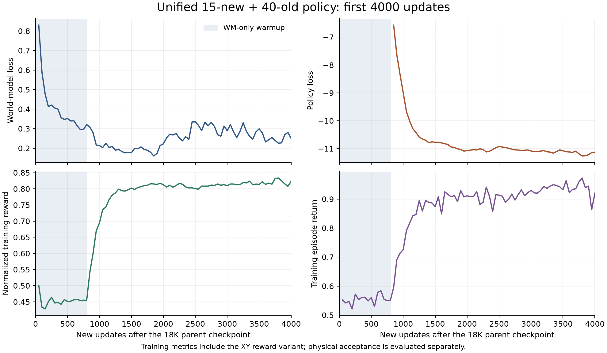
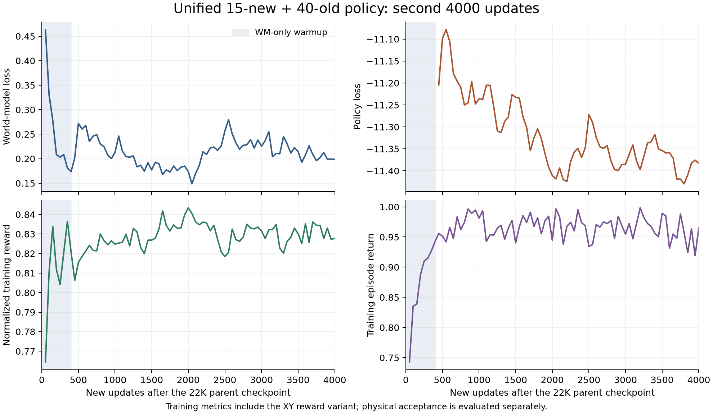
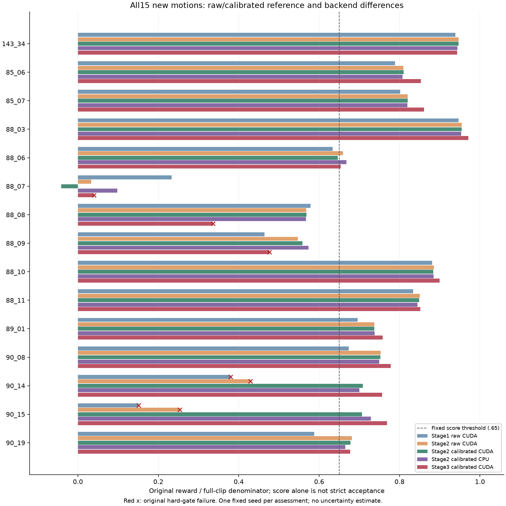

SUPERMIMIC · EXPERIMENT JOURNAL · 2026.11.01
从动作跟踪基线，
到多技能与连续控制
我们已经复现了 G1／LAFAN1 社区基线，也观察到了新动作学习的真实收益。后续实验同时暴露了遗忘、位置漂移、接触敏感性和长序列失稳；目前尚未得到覆盖全部新旧动作并稳定连续运行的统一策略。
整体目标未完成 · 没有把失败候选替换为最终模型
证据截点：2026年11月1日。这里只整理已有实验，不启动训练或执行模型回退。
已验收的社区基线40 / 4016K · 两次评测零提前失败
宏平均约 0.8475；仍有位置误差
扩展目标的固定分母15 + 4015条新素材＋40条原LAFAN1
目标为一个参考条件策略
最近统一分支的连续严格通过1 / 3Qualified V2 · CUDA
原始／校准两组分别为1/3
最新88_07专项严格通过0 / 3CPU／CUDA、原始／校准各组
姿态改善，位置与接触仍失败
已做到什么
真实仿真采样、世界模型与策略训练、完整检查点和恢复流程；40条独立跟踪基线；部分新技能与一条120秒严格连续序列。
还缺什么
新15条全部严格通过、旧40条全部保留，以及多条120秒零重置且跟踪／接触同时合格的连续演示。新素材并不都是空翻。
最新判断
训练并非没有收益，但“姿态学到了”“门限未触发”“技能可稳定部署”是不同结论。当前应先定位难动作的漂移与接触，再验证能力整合。
我们用了什么数据，究竟训练了什么
动作数据给出“要做什么”LAFAN1经重定向后得到G1的40条CSV，共264,705帧，30Hz，约2.45小时；每帧含根位置、朝向和29个关节角。后续加入公开库的15条新素材。
绿色目标来自这些三维参考及选段、转场处理。真实人物视频还需姿态重建与机器人重定向，不能直接作为当前策略输入。
世界模型学习“动作会造成什么”让机器人在仿真中执行动作，保存状态转移，再监督训练可微预测模型。基线使用8步预测窗口；世界模型通过预测误差学习，策略则利用它提供的梯度学习控制。
在模型中展开32步，用跟踪奖励与critic训练策略。奖励包含身体／根部位置、姿态、速度匹配，以及动作变化与关节限位惩罚。
策略负责真正驱动机器人输入机器人状态历史与未来参考帧，输出29个关节控制量。训练时交替采集、更新世界模型、优化策略；常规演示时由策略直接与物理仿真闭环运行。
训练教师只提供约束；它们并不是部署时轮流接管机器人的多个策略。世界模型也不是把视频自动变成动作的模型。
与论文及网页Demo的距离：当前路线是独立社区实现，原基线观测为99D，后续统一模型增加XY误差为101D，与论文93D设定有差异。已复现可微世界模型＋参考条件控制训练流程；任意拖拽扰动下稳定恢复、所有高动态技能、BONES-SEED全规模和真机泛化，均没有得到本项目完整验证。
实现依据：社区实现与数据格式 · 训练循环 · 解析跟踪奖励 · 基线配置
最初的社区路线调研与选型依据
2026年10月24日审计了下列三个公开仓库，没有找到官方完整训练仓库。项目最终基于Uni-SuperMimic推进；其他仓库的代码审计不等于我们已经运行或验证其训练成绩。
原始代码、观测维度与归一化审计
这里记录当时的调研快照，不声称这些仓库或官方开源状态今天仍然相同。模型能力对比：按同一口径查看
先选控制器组，再选后端与参考版本。原始参考、地面高度校准、CPU MuJoCo、CUDA MJWarp及不同输出限制分别记录，缺项显示“未测”。
16K原LAFAN1基线
→18K88_08专项分支
→22K统一第一阶段
→26K统一第二阶段
→30K统一第三阶段
从30K分别产生 Retention V1、Qualified V2 两个31K分支，不能合成连续的32K训练。88_07专项另从16K开始，和统一模型是独立分支。
新技能与旧能力的取舍
新15严格合并通过旧40原门限通过
条形按各自分母归一为百分比；右侧保留实际通过数。两种门槛不等价。
如何解读
22K值得作为回退候选：历史原输出CUDA原始新库严格8/15、旧库39/40；30K校准新库改善，却没有带来连续可靠性的同步提升。
候选起点不等于最优模型：22K缺少部分匹配复测，当前仅做了保存审计与建议，尚未实施回退。
后续31K分支未采用：Retention V1退步；Qualified V2出现连续收益，但CUDA采用条件没有满足。
查看检查点审查和历史指标来源原始新15单独复测时没有旧40组，旧40数字如引用同检查点的全55回归，会在来源列单独标记。早期连续合同与后续“跟踪＋接触”合同分别注明，不能直接连成单调提升曲线。
15条新素材：逐条看到底学到了什么
来自固定版本的公开G1重定向素材库：目录实际15条，README声称16条。所有失败保留，动作名称与原始CMU描述可追溯。
使用上方相同后端与参考版本。未测不是失败，也不是0；单段通过不自动代表多次重复稳定、能转场，或能执行视频里的所有90°／180°／360°腾空翻转。
从复现到探索：我们具体尝试了哪些路
同一条线里保留成功、退步、未进入训练和停止的尝试。
几项改变后续方向的证据
88_07：姿态改善，位置没有一起改善
原门限在CUDA的6次固定重复中从0/6到6/6，倒置覆盖从11.1%到100%；但原始、校准各组严格均0/3。专项副本旧40由40/40降到0/40，不能作为合格教师或最终模型采用。
图为CUDA原始＋校准各3次的均值；原始与校准88_07目标实际上相同。它们是重复运行，不是两种独立动作。完整数值与24段视频
88_08教师：一次成功不足以代表可靠
三次新进程固定seed=0，最大穿地跨过了50mm固定门槛，只有2/3通过。已记录初始状态、历史、目标和首动作相同，状态在第一次仿真步后分化。
尚未定位具体内部子步或排除未记录积分器状态；三次不足以估计真实成功率。原始／校准88_08文件相同，不能把不同运行的结果当成高度校准收益。重复性诊断 · 0.2权重尝试：0更新
① 原始终止门槛高度／倾斜相对参考是否超过固定上限。用于原LAFAN1回归；并不要求所有时刻都直立。
② 跟踪质量世界位置、局部身体、朝向和翻转阶段覆盖。平均回报提高不自动保证这些项目全部合格。
③ 几何接触非预期躯干触地及穿透等。现有记录是几何接触审查，没有测量接触力；原始与校准版本分开。
连续120秒、初始化后零重置，只证明没有重置。失败后仍可继续记录满120秒；必须同时查看首次失稳、跟踪质量和接触结果。
工程中断与科学结果分开记录
下载、换行符、登录与回收会影响实验进度，但0更新不能被记作训练收益或权重假设失败。所有原失败包与证据继续保留。
代表性视频：收益和失败都保留
灰色为真实物理轨迹，绿色为参考。显示上的固定偏移不计入数值误差；没有用剪辑拼接冒充连续成功。
可回退的模型与后续待验证项
建议：16K守住基线，22K优先作为统一模型回退候选，26K／30K保留作对照；88_07保留诊断分支，先检验位置反馈与奖励各自的作用，再考虑受限残差／新增容量和技能整合。以上是研究建议，尚未执行新训练或模型替换。
按11月1日本地清单复查文件存在性；不重新加载所有大检查点。18K专项的本地推理权重与服务器完整训练权重证据分开，未把历史服务器中间点当作本轮现场核验。
训练更新与墙钟记录
这里列证明文件内的训练程序时间，不是端到端准备、评测、排队或账单时长；工程小测试不混入正式训练。
各阶段原报告
10月29日历史发布：代码仓库 · v0.1.0权重与资产 · 历史网页快照。本轮没有向这些公开入口同步更新。
可追溯的证据清单与会话来源
本页读取两个会话的相关历史和本地原始结果；所有数字以对应评测文件为准。没有更改门槛、奖励、参考或分母。
打开汇总数据展开原三阶段完整账本、逐动作记录与旧训练曲线
一个策略：15 条新素材 + 40 条原有动作
剩余 14 条动作的统一训练、旧能力回归、完整失败记录与连续动作测试。BONES 路线暂停；本页不代表论文规模复现或原视频效果已全部完成。
如何读结果原门限检查原实现的高度与姿态失败条件；跟踪质量另查全局位置、全身姿态、朝向、倒置覆盖及末段直立；接触审查另查非预期头/躯干/骨盆触地与穿地。合并通过要求跟踪质量和接触同时通过。零重置不等于零失败。
单动作质量与接触门限在第一阶段候选验收前已固定。所有失败均保留完整轨迹。CPU 与 CUDA/BF16 分别比较，不能把两个后端的差异当成文件丢失。
跟踪标准 ·
接触标准 ·
720 MB 归档及逐文件校验
第一阶段真实训练日志

完整80条原日志；灰色区间只更新世界模型。训练回报包含XY奖励变体，不能代替上方物理验收结果。SVG · PDF · 原始数值
第二阶段完整训练日志

完整80条原始日志，400次世界模型预热；训练指标与独立物理验收分开。SVG · PDF · 原始数值
完整15条分数对照

保留全部15条；虚线只是固定分数门槛，超过它仍须通过跟踪、接触及连续测试。每次评测只有一个固定seed，未估计统计不确定性。SVG · 完整数值
完整新库 15 条
固定素材版本 c493a897f2ca81153e980a65ee6f0faf7cb07487。README 写 16 条，实际只有 15 个 CSV；其中 88_08 曾专项训练，另外 14 条此前未训练。每条都提供完整视频和失败项。素材清单中的状态是训练前冻结快照；当前结果以本页逐项指标与 library-status.json 为准。
原有 40 条完整回归
展开全部40条逐项对照
三条 120 秒连续物理测试
原冻结序列合计覆盖全部15条新素材，完整保留动作时长；只允许 t=0 初始化，转场只变参考，不放置机器人。完整120秒执行后再统计，保留全部失败尾段。第一阶段原始参考结果为1/3通过原门限；这不等于全部动作质量通过。
另存的校准序列仅应用两条既定高度修正及对应转场高度插值，XY、朝向、关节、顺序和时间均不变。原始序列结果继续单独报告。训练未使用这两套冻结测试序列；转场动力学可行性尚未独立验证。
连续跟踪和末段速度标准在第一阶段结果之后定义、第二阶段候选评测前冻结；第一阶段对应计数仅作回顾性诊断。连续标准及定义时点
原始冻结清单 ·
校准对照清单第二阶段及解释边界
90_14、90_15 原始参考整段碰撞几何离地，地面校准分别平移约 -0.17949 m、-0.17120 m；不改原始CSV、动作节奏或关节。单独修正参考仍失败，修正本身不能算学会。89_01 只验身体姿态，没有平衡实物。接触检查是几何诊断，不是接触力、硬件稳定性或真实机器人安全验收。编译后的原生模型中手腕碰撞启用，橡胶手掌为视觉网格；不能将画面接地当作手掌支撑力已验证。碰撞模型核对。
原16K基线文件仍保留，专项副本曾遗忘不代表原文件被覆盖。90/180/360类别与目标视频逐项覆盖尚未完成核验。
执行状态 ·
固定续训方案 ·
素材及SHA256 ·
全库审计 ·
目标视频覆盖 ·
第一阶段资源释放核验 ·
15条画面抽查第三阶段：实际回放采样修正